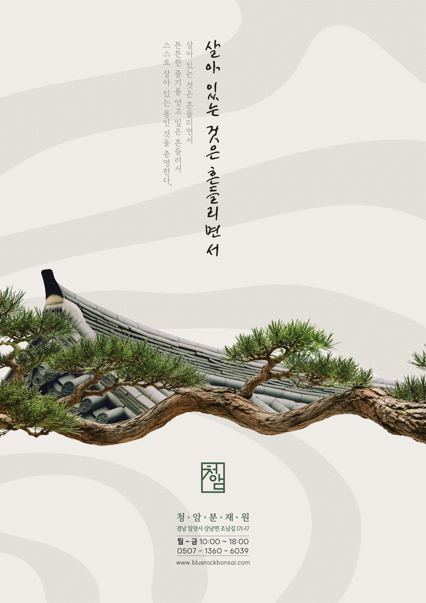
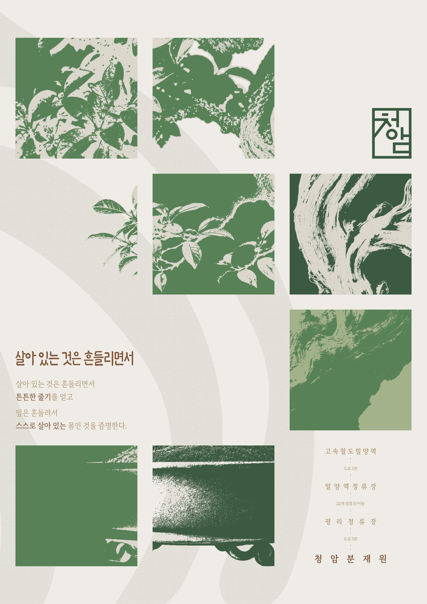

overview
본 포스터는 오규원의 시 「살아있는것은 흔들리면서」가 전하는 생명의 의미를 바탕으로, 고난과 흔들림을 묵묵히 견뎌내는 분재의 강인한 아름다움을 조명한다. 거센 비바람과 오랜 시간의 무게를 작은 몸으로 감내하면서도 과장된 몸짓 없이 자신만의 수려한 형태를 완성하는 분재. 청암분재원은 흔들림을 극복의 흔적이자 고유한 아름다움으로 바라보며, 단순한 관상용 식물을 넘어 시간과 인내가 빚어낸 살아 있는 예술의 가치를 전한다.

overview
본 포스터는 스위스 그리드 시스템의 정돈된 구조 속에서 분재의 줄기와 가지, 잎을 확대해 포착하고, 쓰레숄드(Threshold) 기법의 강렬한 명암 대비를 통해 자연의 형태를 과감한 그래픽 언어로 재해석한다. 유기적으로 뻗어 나가는 분재의 곡선과 흑백의 선명한 대비는 전통적인 분재의 이미지를 현대적이고 감각적인 시각 경험으로 전환한다. 청암분재원은 체계적인 그리드와 실험적인 이미지 표현을 결합하여, 단순한 식물의 기록을 넘어 시간과 생명력이 축적된 분재의 조형적 가치를 새로운 시각언어로 선보인다.